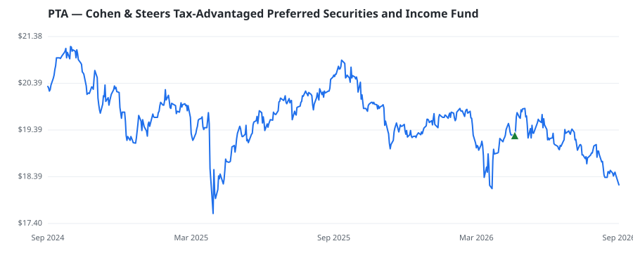

bullish · bearish · n/a — dots: price>SMA10 · SMA10>SMA50 · SMA50>SMA200 · up>down volume (20d)
Other · small cap
Members who bought PTA earned a dollar-weighted -4.3% from their disclosure dates, versus +8.2% for the S&P 500 over the same holding windows (-12.5% alpha).

▲ green = a disclosed purchase · ▼ red = a disclosed sale (plotted on disclosure date)
COHEN & STEERS TAX-ADV PRD SEC AND INC is a non-diversified, closed-end management statutory trust. Its main investment objective is high current income, and the Fund's secondary investment objective is capital appreciation. · website
| Member | Chamber | Out-performer | Disclosed buys $ | Return on buys |
|---|---|---|---|---|
| Debbie Dingell | house | — | $8K | -4.3% |
Disclosed $ figures are bracket midpoints — filings report ranges (e.g. $1,001–$15,000), not exact amounts.